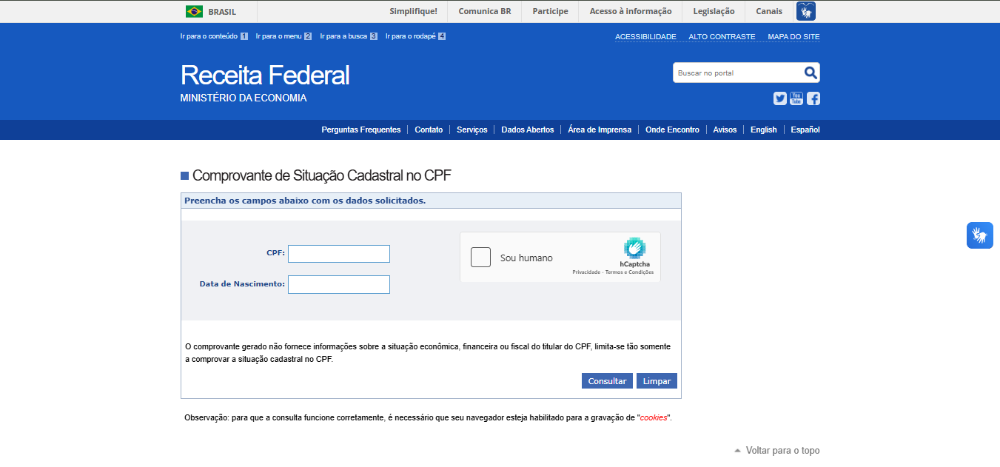

O Que Você Vai Aprender
- Como consultar a situação do seu CPF online na Receita Federal
- Como emitir Certidão Negativa de Débitos Federal sem custo
- Como consultar multas de trânsito no Detran DF pelo celular
- Como verificar se seu nome está sujo no Serasa gratuitamente
- Como emitir 2ª via de conta de luz (Neoenergia/CEB) pela internet
- Como salvar e imprimir seus documentos em PDF
- Qual a validade de cada certidão e quando autenticar
Antes de Começar: Tenha em mãos seus documentos básicos: CPF, RG, data de nascimento. Para algumas consultas você precisará de conta Gov.br (veja Tutorial 1). Para consultas de veículos, tenha a placa e Renavam. Para conta de luz, tenha o número da instalação ou CPF. Prepare-se para economizar muito tempo e dinheiro!
Por Que Fazer Consultas Públicas Online?
Hoje em dia, você não precisa mais perder horas em filas ou pagar despachantes para ter acesso a documentos importantes. Com a internet, você pode:
- Consultar e emitir documentos 24 horas por dia, 7 dias por semana
- Economizar dinheiro (sem taxas de despachante)
- Evitar filas e deslocamentos desnecessários
- Ter acesso imediato às informações
- Organizar melhor sua vida financeira e documental
- Resolver pendências antes que virem problemas maiores
1
Consulta da Situação do CPF na Receita Federal
Por que é importante: Verificar se seu CPF está regular é essencial para abrir contas, fazer financiamentos e até conseguir emprego!
Como fazer:
- Acesse o site:
www.gov.br/receitafederal
- No menu superior, clique em "Serviços"
- Procure por "Consultar CPF" ou use a busca
- Clique em "Consultar sua situação cadastral"
- Digite seu CPF (apenas números, sem pontos ou traços)
- Digite sua data de nascimento no formato DD/MM/AAAA
- Resolva o captcha (digite as letras/números da imagem)
- Clique em "Consultar"
- Veja o resultado: "Regular" ou "Pendente de Regularização"

Tela de consulta da situação do CPF na Receita Federal
CPF Regular: Significa que está tudo certo! Você pode usar normalmente para trabalho, abrir contas, fazer compras parceladas, participar de concursos públicos e todas as outras atividades que exigem CPF regular.
CPF Pendente ou Irregular: Você precisa regularizar urgente! CPF irregular impede você de trabalhar com carteira assinada, abrir contas bancárias e fazer financiamentos. Vá até uma unidade da Receita Federal ou regularize online pelo Portal e-CAC usando sua conta Gov.br.
Motivos comuns para CPF irregular: Não entrega da declaração de Imposto de Renda (se você é obrigado a declarar), divergência de dados cadastrais, ou indícios de fraude. A consulta online mostra qual é o problema específico.
2
Certidão Negativa de Débitos Federal
Para que serve: Documento que comprova que você não tem dívidas com o governo federal (Receita Federal, INSS, PGFN). É pedido em processos seletivos, licitações, financiamentos e diversos outros procedimentos.
Como emitir:
- Acesse o site:
solucoes.receita.fazenda.gov.br
- Procure por "Certidão de Regularidade Fiscal" ou "Certidões"
- Clique em "Emitir Certidão"
- Escolha o tipo: CPF (Pessoa Física)
- Digite seu CPF (apenas números)
- Resolva o captcha
- Clique em "Emitir Certidão"
- A certidão será gerada instantaneamente em PDF
- Clique em "Imprimir" ou "Salvar PDF"
Certidão Negativa: Você não tem nenhum débito com a Receita Federal, INSS ou Procuradoria da Fazenda Nacional. Esse é o melhor resultado!
Certidão Positiva com Efeitos de Negativa: Você tem débitos, mas eles estão parcelados, suspensos por liminar judicial ou com garantia. Na maioria dos casos, essa certidão é aceita como se fosse negativa.
Validade: A certidão tem validade de 180 dias (6 meses). Sempre verifique a data de emissão antes de usar. Depois desse período, você precisa emitir uma nova. É de graça e leva menos de 1 minuto!
3
Consulta de Multas de Trânsito no Detran DF
Por que consultar: Evite surpresas na renovação da CNH! Consulte suas multas regularmente, veja fotos das infrações e pague com desconto se for rápido.
Passo a passo:
- Acesse:
www.detran.df.gov.br
- No menu principal, clique em "Veículos"
- Escolha "Consultar Multas" ou "Infrações"
- Digite a placa do veículo (sem traços, exemplo: ABC1D23)
- Digite o Renavam (número de 11 dígitos que está no documento do carro)
- Resolva o captcha
- Clique em "Consultar"
- Você verá uma lista com todas as multas: pendentes, pagas, em recurso
- Clique em cada multa para ver: data, hora, local, valor, pontos e foto da infração
- Se quiser pagar, clique em "Gerar GRU" (guia de pagamento)
Desconto de 40%: Se você pagar a multa em até 30 dias após receber a notificação (pelo correio ou por aplicativo), tem 40% de desconto! Esse desconto cai para 20% se pagar até 60 dias. Depois disso, paga o valor integral. Vale muito a pena consultar regularmente!
Aplicativo Detran Digital DF: Baixe o app "Detran Digital DF" na Play Store (Android) ou App Store (iPhone). Com ele você pode: consultar multas e pontos na CNH, receber notificações de novas multas, pagar multas direto pelo app, consultar débitos de IPVA e licenciamento.
Pontos na CNH: Lembre-se que além do valor da multa, você pode acumular pontos na Carteira de Motorista. Se chegar a 20 pontos em 12 meses, sua CNH é suspensa. Fique atento e dirija com responsabilidade!
4
Consulta de Nome Sujo no Serasa (Gratuito)
Atenção: Muita gente paga caro para consultar o Serasa, mas você pode fazer de GRAÇA pelo site oficial! Nunca pague por essa consulta.
Como consultar grátis:
- Entre no site oficial:
www.serasa.com.br
- Clique em "Consulte Grátis" ou "Serasa Gratuito"
- Se é sua primeira vez, clique em "Cadastre-se"
- Preencha seus dados: CPF, nome completo, data de nascimento
- Cadastre um e-mail e número de celular válidos
- Crie uma senha forte (mínimo 8 caracteres, com letras e números)
- Confirme o cadastro através do código enviado por SMS ou e-mail
- Faça login com seu CPF e senha
- Na tela inicial você verá: seu Score Serasa (pontuação de 0 a 1000)
- Role a página e veja se tem dívidas registradas (pendências financeiras)
- Clique em "Ver detalhes" para saber: quem incluiu seu nome, valor da dívida, data de inclusão
Cuidado com golpes! O site verdadeiro é www.serasa.com.br (com apenas um "s"). Desconfie de links recebidos por WhatsApp, SMS ou e-mail. Sempre digite o endereço direto no navegador! Nunca forneça sua senha a terceiros.
Score Serasa: É uma pontuação de 0 a 1000 que indica suas chances de conseguir crédito aprovado. Quanto maior, melhor! 0-300 (baixo), 301-700 (regular), 701-1000 (bom a excelente). O score sobe quando você paga contas em dia, tem renda estável e mantém baixo endividamento.
Negociar dívidas: Pelo próprio site do Serasa você pode negociar suas dívidas diretamente com as empresas credoras. Muitas vezes há descontos de até 90% para pagamento à vista! Acesse "Limpa Nome" para ver as ofertas disponíveis.
Contestação de dívidas: Se você vir uma dívida que já foi paga ou que você não reconhece, pode contestar direto pelo site. Clique em "Contestar" ao lado da dívida e siga as instruções. A empresa tem até 7 dias para responder.
5
Emissão de 2ª Via de Conta de Luz (Neoenergia/CEB)
Situação comum: Perdeu a conta de luz? Venceu e você não guardou? Precisa da conta para comprovante de residência? Emita online em segundos!
Para Neoenergia Brasília (antiga CEB):
- Acesse:
www.neoenergiabrasilia.com.br
- Clique em "Agência Virtual" ou procure "2ª Via de Conta"
- Digite o número da instalação (tem 9 ou 10 dígitos, está na conta antiga)
- Se não tiver o número da instalação, você pode usar seu CPF/CNPJ
- Clique em "Consultar" ou "Buscar"
- O sistema mostrará as contas disponíveis (atual e meses anteriores)
- Escolha qual mês você precisa
- Clique em "Gerar PDF", "Baixar Conta" ou "Imprimir"
- A conta com código de barras será baixada no seu celular ou computador
- Salve o arquivo com um nome fácil de encontrar, exemplo: "Conta_Luz_Dezembro_2024.pdf"
Aplicativo: Baixe o app "Neoenergia Brasília" na Play Store (Android) ou App Store (iPhone). Com o app você pode: consultar consumo em tempo real, receber avisos de vencimento, pagar contas sem sair de casa, solicitar serviços (troca de titularidade, revisão de leitura, etc).
Código de barras: A 2ª via emitida online tem o mesmo código de barras da conta original. Você pode pagar normalmente em qualquer banco, lotérica, aplicativo de banco ou com PIX. Nunca pague duas vezes a mesma conta!
Débito automático: Para nunca mais esquecer de pagar e evitar multas por atraso, cadastre débito automático. Acesse o site ou app da Neoenergia, vá em "Débito Automático", informe seus dados bancários e pronto! A conta será debitada automaticamente todo mês na data de vencimento.
Comprovante de residência: A conta de luz é um dos documentos mais aceitos como comprovante de residência. Geralmente é aceita com até 90 dias de emissão. Verifique se o endereço e seu nome estão corretos antes de usar como comprovante.
6
Como Salvar e Imprimir Documentos em PDF
Essencial saber: Não adianta consultar se você não souber guardar os documentos! Veja como salvar corretamente em diferentes dispositivos.
No celular Android:
- Quando o documento (certidão, conta, etc) aparecer na tela, procure o ícone de "Compartilhar" ou "Três pontinhos" (⋮)
- Toque nesse ícone
- Escolha "Baixar", "Salvar" ou "Imprimir"
- Se escolher "Imprimir", selecione como impressora "Salvar em PDF" em vez de uma impressora física
- Escolha onde salvar: Download, Google Drive, Meus Arquivos ou outra pasta
- Renomeie o arquivo com um nome claro, exemplo: "Certidao_CPF_Jan2024" ou "Conta_Luz_Dez2024"
- Toque em "Salvar"
No iPhone (iOS):
- Quando o documento aparecer, toque no ícone de "Compartilhar" (quadrado com seta para cima)
- Role as opções e escolha "Salvar em Arquivos"
- Selecione a pasta onde quer salvar (pode criar uma pasta nova chamada "Documentos Importantes")
- Toque em "Salvar"
- Para acessar depois, abra o app "Arquivos" no iPhone
No computador:
- Quando o documento aparecer no navegador, clique com o botão direito do mouse sobre ele
- Escolha "Salvar como" ou "Salvar página como"
- Ou use o atalho do teclado: Ctrl + S (Windows/Linux) ou Command + S (Mac)
- Escolha a pasta onde quer salvar (recomendo criar uma pasta "Documentos" ou "Certidões")
- Dê um nome claro ao arquivo
- Certifique-se de que o formato está como "PDF"
- Clique em "Salvar"
Backup na nuvem: Depois de salvar no celular ou computador, faça backup dos documentos importantes! Envie para: Google Drive (gratuito, 15GB), Dropbox, OneDrive ou iCloud. Assim, se você perder o celular ou o computador der problema, seus documentos estão seguros e acessíveis de qualquer lugar!
Para imprimir: Se precisar do documento físico em papel, você tem várias opções: imprimir em casa (se tiver impressora), ir até uma papelaria ou lan house com o arquivo no celular (via Bluetooth ou cabo USB), enviar por e-mail e imprimir na papelaria, salvar em pen drive e levar até a papelaria. O custo geralmente é de R$ 0,10 a R$ 0,50 por página preta e branca.
Validade das Certidões e Documentos
Cada documento tem uma validade diferente. É importante conhecer para não perder tempo emitindo documentos vencidos!
| Documento |
Validade |
Precisa Autenticar? |
| Consulta de CPF |
Consulta instantânea, sem validade formal |
Não (apenas para conferência pessoal) |
| Certidão Negativa Federal |
180 dias (6 meses) |
Depende - alguns processos exigem autenticação |
| Consulta de Multas |
Instantânea, sem validade |
Não |
| Consulta Serasa |
Instantânea (atualiza diariamente) |
Não (apenas para conferência) |
| 2ª Via Conta de Luz |
Vale até o vencimento para pagamento; 90 dias para comprovante |
Geralmente não (aceita sem autenticação) |
Quando autenticar: Você só precisa autenticar documentos quando a empresa, banco, órgão público ou instituição exigir expressamente na lista de documentos. A autenticação deve ser feita em cartórios e custa cerca de R$ 8 a R$ 15 por documento. Muitos lugares já aceitam cópias simples ou versões digitais!
Assinatura eletrônica: Documentos emitidos através do Gov.br com assinatura eletrônica têm validade jurídica e geralmente não precisam de autenticação física. A certidão negativa federal, por exemplo, já vem com QR Code que permite verificar sua autenticidade online!
Sites Oficiais - Guarde Esta Lista!
Salve estes endereços nos seus favoritos para consultar sempre que precisar:
| Serviço |
Site Oficial |
Precisa Cadastro? |
| Consulta CPF |
www.gov.br/receitafederal |
Não |
| Certidão Federal |
solucoes.receita.fazenda.gov.br |
Não |
| Multas Detran DF |
www.detran.df.gov.br |
Não para consulta web
Sim para app |
| Serasa |
www.serasa.com.br |
Sim (gratuito) |
| Neoenergia (antiga CEB) |
www.neoenergiabrasilia.com.br |
Não para 2ª via
Sim para serviços completos |
Organizando Seus Documentos Digitais
Agora que você sabe consultar tudo online, aprenda a se organizar para nunca mais perder nada!
Crie uma estrutura de pastas organizada:
- No seu celular ou computador, crie uma pasta principal: "Documentos Importantes"
- Dentro dela, crie subpastas temáticas:
- Certidões - Para certidões de CPF, débitos, antecedentes, etc
- Comprovantes - Comprovantes de residência, renda, pagamentos
- Veículo - CNH, documentos do carro, IPVA, multas, licenciamento
- Contas - Contas de luz, água, internet, telefone
- Saúde - Exames, receitas médicas, atestados, cartão de vacina
- Trabalho - Contracheques, contratos, declarações
- Nomeie os arquivos de forma padronizada: TipoDocumento_Mês_Ano
- Exemplos de nomes: "Certidao_Federal_Jan2024.pdf", "Conta_Luz_Dez2024.pdf", "Multa_Detran_Nov2024.pdf"
- Faça backup mensal: todo início de mês, envie os documentos novos para a nuvem
Crie lembretes automáticos: Use o Google Calendar, calendário do celular ou app de lembretes para programar avisos periódicos. Exemplos: "Consultar multas - todo dia 1", "Renovar certidão federal - 15 de junho", "Verificar Serasa - toda segunda-feira". Isso ajuda você a se manter organizado e resolver problemas antes que fiquem grandes!
Segurança dos documentos: Seus documentos contêm dados pessoais sensíveis! Proteja-os seguindo estas dicas: use senha forte no celular/computador, não compartilhe PDFs por WhatsApp (prefira e-mail ou compartilhamento seguro no Drive), nunca salve documentos em computadores públicos ou de terceiros, use apps de nuvem com autenticação em duas etapas, faça backup regular mas mantenha tudo privado.
Dúvidas Comuns
1. Posso emitir certidão para outra pessoa?
Resposta: Não diretamente pela internet, pois os sistemas pedem dados pessoais que só a própria pessoa deve ter acesso. Você pode ajudar alguém a emitir (um idoso, por exemplo), mas usando os dados dela e com autorização. Para procedimentos oficiais com procuração, é necessário ir pessoalmente ou usar assinatura eletrônica via Gov.br nível ouro.
2. Meu CPF está irregular. O que faço?
Possíveis soluções:
- Se a situação é "Pendente de Regularização", veja o motivo na consulta
- Motivos comuns: falta de declaração de IR, divergência cadastral, indícios de fraude
- Para declaração de IR em atraso: acesse o Portal e-CAC (precisa de conta Gov.br nível prata ou ouro) e entregue a declaração
- Para atualização cadastral: vá até uma agência da Receita Federal com RG, título de eleitor e comprovante de residência
- Agende pelo site:
www.gov.br/receitafederal → Atendimento → Agendamento
- É muito importante resolver logo! CPF irregular impede emprego formal, abertura de contas, financiamentos
3. A certidão negativa sai na hora mesmo?
Sim! O sistema é automático. Se você não tiver débitos federais pendentes, a certidão negativa é gerada instantaneamente em PDF. Se você tiver débitos mas eles estiverem parcelados ou suspensos por decisão judicial, pode sair uma "Certidão Positiva com Efeitos de Negativa", que serve para a maioria das finalidades. Só não sai certidão negativa se você tiver débitos não pagos e não parcelados.
4. Como saber se um site é verdadeiro ou golpe?
Dicas de segurança:
- Sites oficiais do governo SEMPRE terminam em .gov.br (exemplos: detran.df.gov.br, receita.fazenda.gov.br)
- Verifique se há um cadeado fechado 🔒 na barra de endereço (significa conexão segura HTTPS)
- NUNCA clique em links enviados por WhatsApp, SMS, e-mail ou redes sociais
- SEMPRE digite o endereço do site direto no navegador
- Desconfie de sites que pedem pagamento para serviços gratuitos
- Sites verdadeiros não pedem senha por telefone, e-mail ou WhatsApp
- Se tiver dúvida, procure o nome do órgão no Google e entre pelo resultado oficial
5. Posso usar essas consultas como documentos oficiais?
Depende do documento:
- Certidão Negativa Federal: Sim! Tem pleno valor legal e é aceita em processos, licitações, concursos públicos, financiamentos
- Conta de luz (2ª via): Sim! É aceita como comprovante de residência na maioria dos lugares (bancos, matrículas escolares, etc)
- Consulta de CPF: Não. Serve apenas para você conferir sua situação. Para apresentar oficialmente, você precisa da Certidão de Situação Cadastral (que é diferente da consulta)
- Consulta de multas: Não. É apenas informativa. Para recursos ou processos, você precisa pedir certidões oficiais ao Detran
- Consulta Serasa: Não oficialmente. Serve para você acompanhar sua situação financeira
6. E se eu não conseguir acessar ou tiver problemas técnicos?
Soluções alternativas:
- Tente em outro navegador (Chrome, Firefox, Edge, Safari)
- Limpe o cache e cookies do navegador
- Tente no computador se estava no celular, ou vice-versa
- Use uma aba anônima/privativa do navegador
- Verifique sua conexão com a internet
- Tente em outro horário (sites podem estar em manutenção)
- Para problemas persistentes, procure um telecentro, biblioteca pública ou ponto de atendimento presencial
- Ligue para os canais de atendimento: Receita Federal 146, Detran 154, Serasa 0800-021-3637
Dicas Extras para Aproveitar Melhor
Dica 1: Consulte regularmente
Faça uma rotina de consultas a cada 2-3 meses. Coloque um lembrete no celular para: consultar situação do CPF, verificar se tem dívidas no Serasa, checar multas de trânsito, conferir se há débitos federais. Identificar problemas cedo evita dores de cabeça futuras!
Dica 2: Baixe os aplicativos oficiais
Apps facilitam muito sua vida! Baixe na loja do seu celular: Gov.br (acesso a todos os serviços federais), Detran Digital DF (multas e CNH digital), Serasa (score e negociação de dívidas), Neoenergia Brasília (contas de luz). Com apps você recebe notificações e consulta em segundos!
Dica 3: Aproveite os descontos
Fique atento às oportunidades de economia: multas de trânsito têm 40% de desconto se pagas em 30 dias, contas de luz podem ter desconto no débito automático, dívidas antigas no Serasa podem ser negociadas com até 90% de desconto. Consulte regularmente e aproveite!
Dica 4: Compartilhe conhecimento
Ensine seus familiares e amigos a fazer essas consultas! Muita gente paga caro em despachantes para serviços que são 100% gratuitos online. Mostre para seus pais, avós, vizinhos. Você fazendo sozinho economiza dinheiro e tempo. Inclusão digital é para todos!
Dica 5: Mantenha tudo organizado na nuvem
Use Google Drive, Dropbox ou OneDrive para manter backups. Crie uma pasta compartilhada com um familiar de confiança (caso você precise de ajuda ou aconteça alguma emergência). Organize por ano e tipo de documento. Um dia você vai agradecer por ter tudo guardado!
Resolvendo Problemas Comuns
Problema: "Erro ao consultar" ou "CPF inválido"
Solução:
- Verifique se digitou o CPF corretamente - apenas números, sem pontos, traços ou espaços
- Confira se a data de nascimento está no formato correto (DD/MM/AAAA)
- Certifique-se de ter preenchido o captcha corretamente
- Tente em outro navegador (Chrome, Firefox, Edge)
- Limpe o cache do navegador ou use uma aba anônima (Ctrl+Shift+N no Chrome)
- Se o problema persistir, o site pode estar em manutenção - aguarde algumas horas e tente novamente
Problema: Não consigo fazer download do PDF
Solução:
- Verifique se seu celular/computador tem espaço de armazenamento disponível
- Autorize o navegador a fazer downloads (pode aparecer um aviso pedindo permissão)
- Tente usar o botão "Imprimir" e escolha "Salvar como PDF" como destino
- Use outro navegador para testar
- No celular: vá em Configurações → Apps → Navegador → Permissões → Ative "Armazenamento"
- No computador: clique com botão direito no PDF e escolha "Salvar link como"
Problema: Site diz que tenho dívida, mas eu já paguei
Solução:
- Sistemas levam de 5 a 15 dias úteis para atualizar após o pagamento
- SEMPRE guarde o comprovante de pagamento (você vai precisar para contestar)
- No Serasa: você pode contestar dívidas pagas diretamente pelo site/app
- Se passou mais de 30 dias e ainda não atualizou: entre em contato com o credor (empresa que você devia)
- Procure o Procon se não resolverem (telefone: 151 ou www.procon.df.gov.br)
- Para certidões: anexe o comprovante de pagamento junto ao documento quando apresentar
Problema: Não recebo o código de validação por SMS
Solução:
- Aguarde até 5 minutos - às vezes o SMS demora
- Verifique se seu celular tem sinal de operadora
- Confira se o número está correto (com DDD)
- Veja se a caixa de mensagens não está cheia
- Tente clicar em "Reenviar código"
- Se seu chip for muito antigo, pode estar com problema - troque na operadora
- Use outro número de celular temporariamente
Parabéns! Você Concluiu Este Tutorial!
Agora você domina as 5 consultas públicas mais importantes e sabe:
- Consultar a situação do seu CPF
- Emitir Certidão Negativa de Débitos Federal
- Consultar multas de trânsito no Detran DF
- Verificar seu nome e score no Serasa gratuitamente
- Emitir 2ª via de conta de luz
- Salvar, organizar e proteger documentos digitais
Você está economizando tempo e dinheiro! Não precisa mais pagar despachantes nem perder horas em filas. Continue praticando e explorando os outros tutoriais!